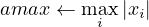

4.4 psb_normi — Infinity-Norm of Vector
This function computes the infinity-norm of a vector x.
If x is a real vector it computes infinity norm as:

else if x is a complex vector then it computes the infinity-norm as:
psb_geamax(x, desc_a, info [,global])
psb_normi(x, desc_a, info [,global])
|
|
|
| amax | x | Function |
|
|
|
| Short Precision Real | Short Precision Real | psb_geamax |
| Long Precision Real | Long Precision Real | psb_geamax |
| Short Precision Real | Short Precision Complex | psb_geamax |
| Long Precision Real | Long Precision Complex | psb_geamax |
|
|
|
| |
Table 4: Data types
-
Type:
- Synchronous.
-
On Entry
-
-
x
- the local portion of global dense matrix x.
Scope: local
Type: required
Intent: in.
Specified as: a rank one or two array or an object of type
psb_T_vect_type containing numbers of type specified in Table 4.
-
desc_a
- contains data structures for communications.
Scope: local
Type: required
Intent: in.
Specified as: an object of type psb_desc_type.
-
global
- Specifies whether the computation should include the global reduction
across all processes.
Scope: global
Type: optional.
Intent: in.
Specified as: a logical scalar. Default: global=.true.
-
On Return
-
-
Function value
- is the infinity norm of vector x.
Scope: global unless the optional variable global=.false. has been
specified
Specified as: a long precision real number.
-
info
- Error code.
Scope: local
Type: required
Intent: out.
An integer value; 0 means no error has been detected.
Notes
- The computation of a global result requires a global communication, which
entails a significant overhead. It may be necessary and/or advisable to compute
multiple norms at the same time; in this case, it is possible to improve the
runtime efficiency by using the following scheme:
vres(1) = psb_geamax(x1,desc_a,info,global=.false.) vres(2) = psb_geamax(x2,desc_a,info,global=.false.) vres(3) = psb_geamax(x3,desc_a,info,global=.false.) call psb_amx(ictxt,vres(1:3))
In this way the global communication, which for small sizes is a latency-bound
operation, is invoked only once.